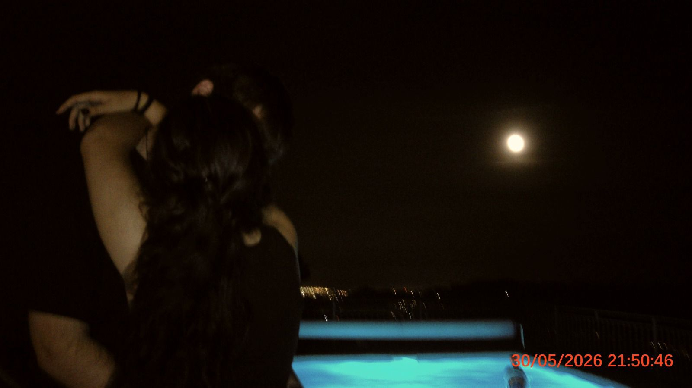
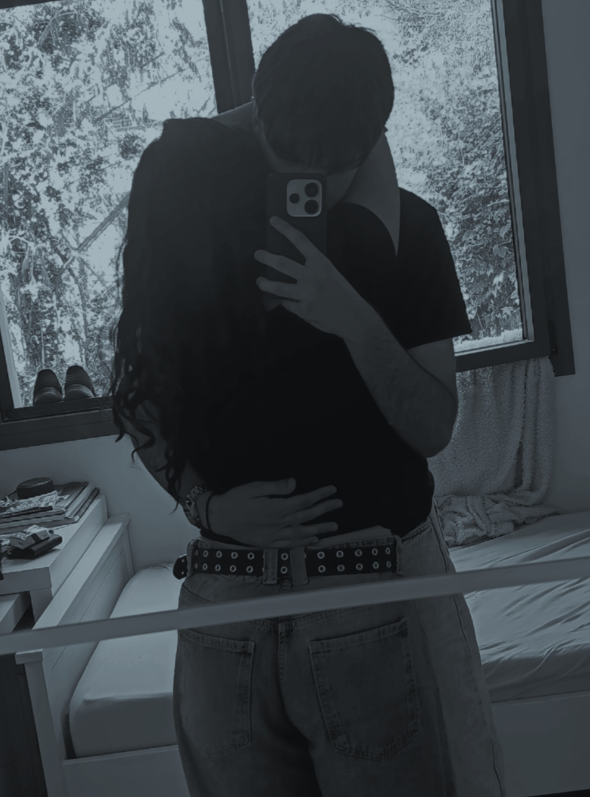
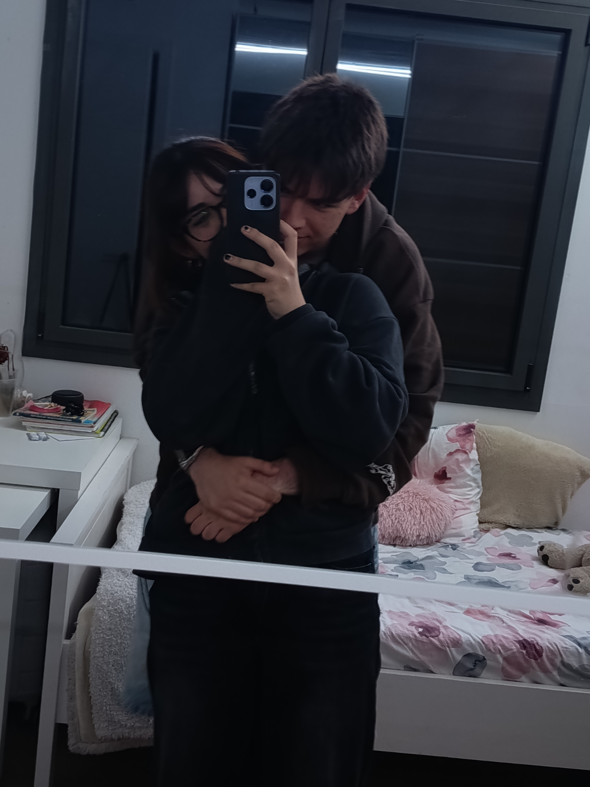

Un mes oficialmente.
Aunque para mí todo empezó mucho antes.



Venga va, voy a sacar mi lado mas empalagoso como siempre solo por ti.
Que decirte que no te haya dicho una y mil veces amor. Para mi no cuplimos hoy un mes, ya llevamos desde aquella noche que te conocí y supe que seria diferente.
Se que hay noches donde te comes la cabeza con situaciones que piensas que van a pasar entre nosotros, como que me voy a ir, y se me hace tan imposible que quepa en esa cabecita esas mierdas.
Dios, me falta arrancarme el corazon y dartelo. Considero que soy muy complicada de llevar, y por eso siempre oculto muchas de mis facetas ante el exterior, he puesto muchos muros ante los demas, me da miedo que alguien me conozca tan bien. Al parecer mi mayor miedo se ha cumplido, y no ha sido tan horrible como pensaba. Nunca tuve que ocultar o reprimir mi forma de ser contigo, desde el momento 0 fui yo, nunca me habia pasado. Como siempre el niño este rompiendo mis barreras. Siempre me has demostrado que me quieres, ante cualquier situación, al igual que siempre me has dado mi sitio. Soy ta feliz de estar contigo.
Sabes que he ido de tio en tio, y se que eso puede ser otra inseguridad. Mi vida siempre ha ido muy a la deriva, siempre me he sentido sola, y para sobrellevar este vacio hice lo que hice en sus dias. Me aferraba a los demas. Siempre me ha gustado referirme a eso con la metafora de que estaba en medio del mar, a punto de morir, y aparecia un palo, evidentemente me aferraba a él con mi vida. Pero la diferencia de todos los demas y tu es que a ellos siempre les he querido desde la ansiedad, desde la depedencia, lo roto, mis versiones creadas unicamente para ellos para sentirme elegida. A ti te amo desde que me levanto hasta que me voy a dormir, te eligo cada dia de forma consiciente y sana, nunca habia estado tan estable. Haces que todo sea tan facil, es tan facil quererte joder.
Me sale hacerte estas tonterias a pesar de que siempre he sido 0 romantica o he hecho las cosas por mero compromiso.
Amo todo de ti; tu forma de quererme, tu sonrisa, tu pelo, tu risa, lo mimada que me tienes, como me hablas, lo que quieres a tus gatos, tu manera de ser con los tuyos, lo bien que hueles,que busques siempre mi contacto fisico, tus detalles, tu inteligencia, madurez emocional, el soporte que me das siempre a pesar de que no me entiendas. Siempre intentas hacerlo igual.
Tambien sabes lo que me acojona pensar en relaciones duraderas, y me sigue pasando amor, pero viendo el rumbo de esta relacon se que no solo seras el unico que conocera a mi padre o abuelos, el unico con el que he dormido...tambien seras el unico con el que me vea para estar siempre a su lado.
Dios hacia tant que no escribia, ya t lo dije, de un corazon enamorado salen muchas cosas.
Me encanta que siempre hablemos las cosas y dejemos de lado nuestro orgullo o ego por nosotros. Sé que nunca nos iremos a dormir enfadados. Soy consciente de que habran muchas peleas, y noches dondeno nos entendamos, pero no me pone ansiosa eso, estoy tan segura de lo nuestro y de que lo hablaremos, que eso pasa a tercer plano.
Quiero compartir y vivir muchisimas cosas contigo, quiero empaparme de tu forma de querer y ser, de tu cara, tus gestos, tus movimientsos, lo quiero todo contigo.
En fin amor, este es el primer mes que pasamos oficialmente como pareja y solo queria recordarte todas mis emociones por ti. Ademas, seguro que España gana el partido y asi en un dia tendras dos cositas que te pongan feliz.
Te amo con todo mi corazon de loca, desde mi parte toxica a la estable.